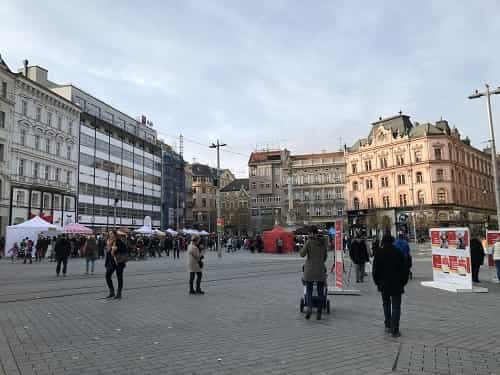

Kyle is an entrepreneur and nomad who has been living abroad since 2016. He blogs at This Is Trouble. Follow him on Facebook.


It’s no big secret at this point that capital cities in Eastern Europe are somewhat played out. Between tourists flocking to these “new and exotic places,” stag parties stumbling through the streets, Tinder taking over, and an influx of Western characteristics—these cities are different than what they used to be. The more that these capital cities become overrun, the more men will look to the countryside to find feminine girls, fewer tourists, and a different way of life.
The Czech Republic is an interesting place, namely because it’s outside of Prague and relatively lacking in Western tourists. Prague of course, is overrun as a “game” spot, and gets no love over on RVF.
The second-tier cities in Czech Republic are relatively untapped and unexplored. Unlike Poland, where places like Krakow, Poznan, and Wroclaw are quite known—the same can’t be same for places like Brno or Ostrava. I spent a bit of time in Brno last month, and came away with the following four impressions.
Locals in Prague have an attitude similar to New Yorkers or Los Angelos in the United States. Namely, that they think their city and region is superior to the others. And honestly, they’re not wrong. Prague is stunningly beautiful, very developed for an Eastern European country, and most of the rest of the Czech Republic is not on par.
The people in Brno, and from what I hear, the rest of the surrounding Moravian region, were much more friendly and open. Speaking English? They’d love to. Service with a smile? Definitely.
The biggest tourist attractions in Brno.
Of course, with this comes far less hustle and bustle, which tends to de-motivate those of us who like to hustle hard. People in Moravia tend to have a much more laid-back approach to life. While this does have its perks (friendliness), the downside is that it’s hard to hustle and get ahead economically.
Here’s the thing about many capital cities—they’re big places. There are always new opportunities, new people to connect with, and more money to make. People are hustling—they’re founding startups, working long hours, trying to get ahead in their career.
Finding that in Brno is going to be difficult. I found myself much preferring to spend the day in a cafe watching people wander by at a leisurely pace. Granted, I was on “vacation,” but if I were to book a month there, I don’t think I’d get much done.

If you’re someone who likes to explore all the ins and outs of your home city, Brno is definitely not for you. You can walk from one end of the main square to the other in 7 to 10 minutes. Outside of that, the beauty of the place falls off significantly. I don’t think foreigners would have many reasons to go outside of that area. All the locals even congregate in the very center—it’s where the majority of restaurants, cafes, and stores are all located. If you have the bankroll to stay in the center, you’ll hardly leave.
Granted, this isn’t much different than people living in a place like Bogota and never leaving Zona Rosa. Often times, expats don’t get out much from their home zone, but places in Eastern Europe like Krakow, Budapest, and Prague have many interesting districts that anyone staying more than a week should explore. I don’t think I could say the same about Brno—those districts simply don’t exist.
I was spending most of my time with a friend who had recently moved to Brno. And here’s what he had to say:
Moravian girls are traditional, they seem to want a family. Even if they move out, they are often not far from their own families. They have a “rivalry” with other, more liberal regions—and don’t want to lose their identity.
I found this interesting. Every country has regions that are more resistant to change than others. Big, capital cities are always the first to dive headfirst into the liberal way of thinking. But in Brno’s case, it has these things going for it:
In any case, Brno was not for me. I know who I am, and I like the big cities. I just don’t seem to click as well with the smaller ones, though they’re okay for short trips, but perhaps you can find what they’re looking for in Brno.
Sick and tired of not getting replies with online dating? Now you can copy what’s worked and use it yourself—learn more here. For more content about dating abroad, check out The Dating Abroad Podcast.